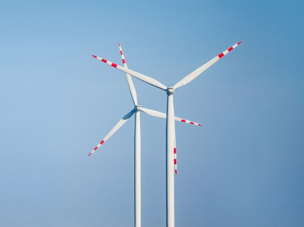

Advancements in Wind Turbine Technology: Enhancing Renewable Energy Capacity
Unleashing the Potential of Wind Power
Wind energy has emerged as a key player in the transition to renewable energy, offering a clean and
abundant source of power. Recent advancements in wind turbine technology have significantly enhanced the
efficiency, reliability, and capacity of wind energy generation, making it a competitive alternative to
traditional fossil fuels.

One of the most notable advancements is the development of larger and more efficient rotor blades. By
increasing the size of rotor blades, wind turbines can capture more energy from the wind, even at lower
wind speeds. This improvement in aerodynamics has led to a substantial increase in energy production and a
reduction in the cost of wind energy.
In addition to larger rotor blades, advancements in turbine design and materials have also contributed to
improved performance and durability. Innovative technologies such as carbon fiber blades and direct-drive
generators have minimized maintenance requirements and increased the lifespan of wind turbines, further
driving down the cost of wind energy.
Furthermore, the integration of digital technologies and predictive analytics has enabled more precise
control and optimization of wind turbine operations. Real-time monitoring and data analysis allow
operators to maximize energy output while minimizing downtime and maintenance costs, ultimately improving
the overall efficiency and reliability of wind energy systems.
With ongoing research and development, the future of wind turbine technology holds even greater promise.
From offshore wind farms to floating turbines and airborne wind energy systems, innovative solutions
continue to expand the potential of wind power and accelerate the transition to a sustainable energy
future.